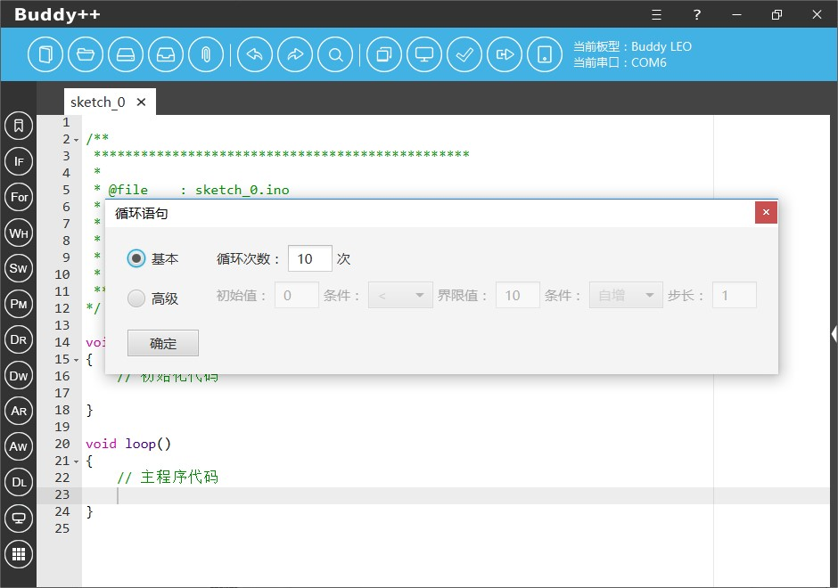
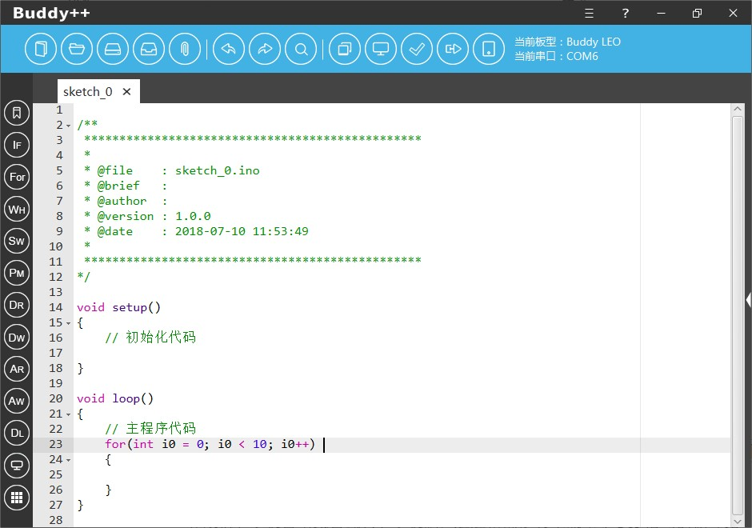
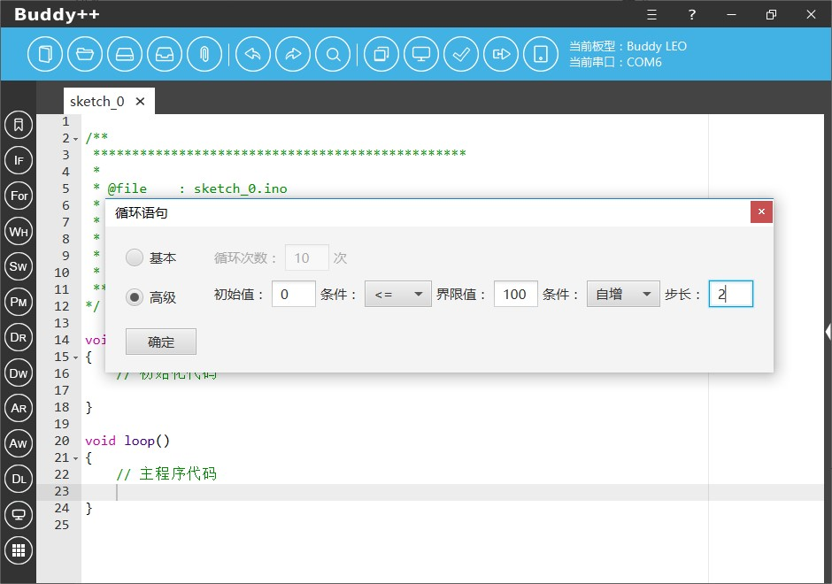

循环结构同样也是程序设计基本思路三个基础流程中的重要一环，我们通常使用For语句实现程序有限次数的循环结构，Buddy++通过辅助工具协助初学者使用基于For语句的循环结构编程。
使用时开发者点击左侧工具栏纵向第三个图样为“For”简写的图标即可弹出“For条件循环”工具。工具提供了两种设置模式，在“基本模式”中，开发者只需要输入程序循环执行的具体次数皆可生成基于For语句的循环结构代码片段。


在“高级模式”中，开发者可以自定义控制循环条件的初始值、逻辑条件、界限值、步长自增或自减去、步长制，通过精确定义生成基于For语句的循环结构代码片段。
